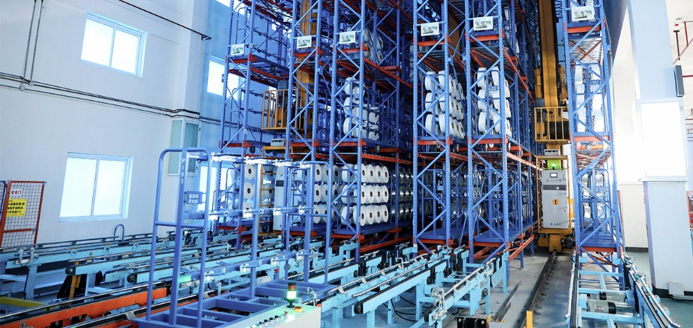
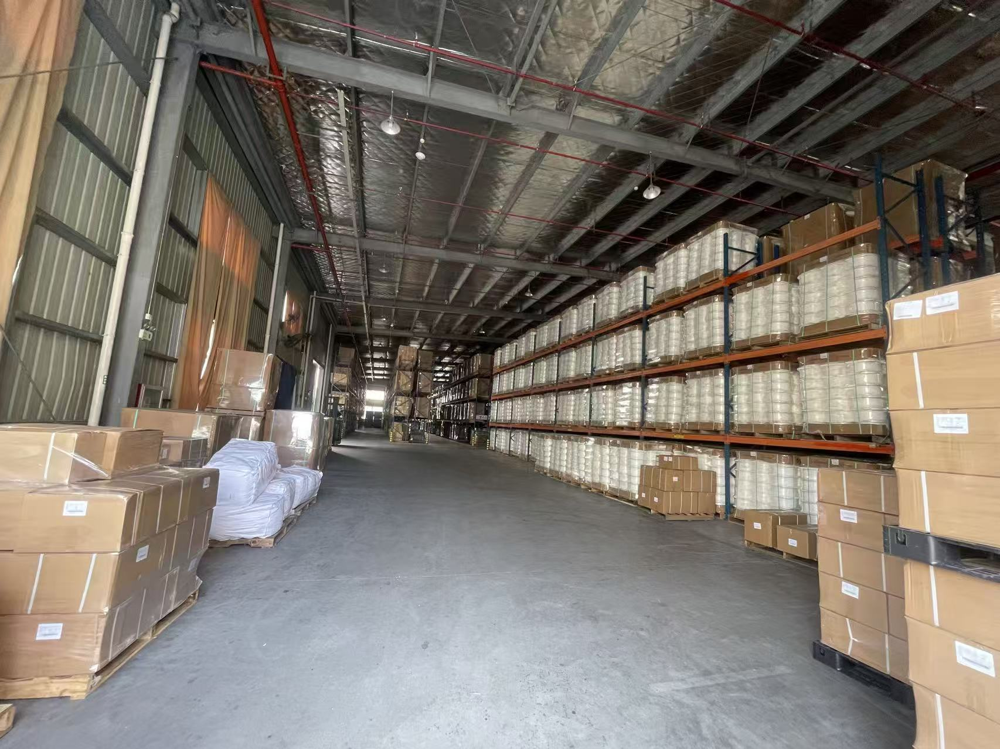

Shanyue Textile integrates smart ASRS (Automated Storage & Retrieval System) warehouse platforms to manage our vast inventory of premium yarns. The ASRS computer system guides heavy stacker cranes down narrow aisles to store and retrieve pallets dynamically. Combined with our digital warehouse management system (WMS), we achieve real-time tracking of lot numbers, production dates, and bobbin locations. This guarantees 100% inventory accuracy and facilitates speedy dispatching to major logistics hubs and ports.
Warehouse Showcase
Detailed visual references for our computerized storage systems and distribution warehousing capacity.

ASRS Automated Storage & Retrieval System
This shows the interior of our vertical ASRS (Automated Storage & Retrieval System) warehouse. Steel high-rise storage racks rise up to 24 meters, drastically saving floor footprint. In this layout, computerized stacker cranes travel along ground rails and overhead guides, quickly picking up or placing pallets in their designated positions using dynamic coordinate control linked to the warehouse database.

Spacious & Organized Product Warehousing
A panoramic view of our bulk product distribution warehouse. Packed yarn spools, sealed inside moisture-proof export cartons, are systematically palletized, stretch-wrapped, and stored on heavy-duty racks. The spacious layout leaves wide driveways for electric forklifts to quickly access storage rows, facilitating rapid loading and shipping logistics to global hubs.
Logistics Infrastructure
Scale metrics representing our storage and distribution throughput.
Logistics Highlights
Advanced features that optimize storage and outbound delivery.
High-density ASRS
- Automated computer-guided stacker cranes
- Optimal vertical space utilization up to 24 meters
- High speed handling (speeds up to 180 m/min)
Smart WMS Software
- FIFO (First-In, First-Out) inventory dispatching
- Real-time lot traceability (spinning unit to customer)
- Direct ERP integration for swift order processing
Global Shipping Hub
- Convenient access to major commercial highways
- Proximity to Ningbo and Shanghai export ports
- Dedicated loading docks for fast container stuffing